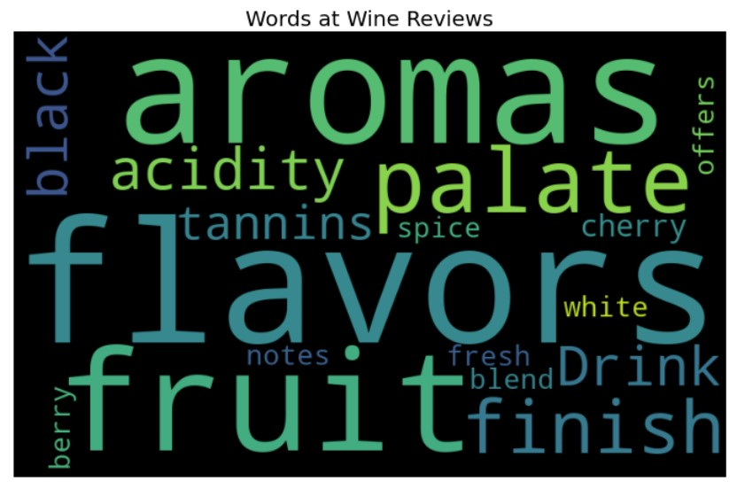

Our Project aims to perform Exploratory Data Analysis using WordCloud in Python. Word Cloud is a data visualization technique used for representing text data in which the size of each word indicates its frequency or importance. Significant textual data points can be highlighted using a word cloud. Word clouds are widely used for analyzing data from social network websites.
Data Set:
Name: Wine Reviews
Source: Kaggle
Note: We could not load this dataset and plot the graphs from our jupyter notebook here again, however since the dataset is too huge in size for Idyll, it runs out of memory while reading the data so we have resorted to another medium. These same graphs and visualizations are built and designed in our jupyter notebook and we have included them here as images.
The Wine Review data set consists of 129970 rows of reviews of Wine and 13 columns out of which 2 are numeric: Points and Price and rest are characteristic values such as Country of Origin, description of the Wine, Winery, Variety, Taster Name, etc. These observations are nothing but reviews of Wines from all over the world, tasted and reviewed by multiple renoun tasters. These tasters travel around the world reviewing Wines as a profession and rating them. These reviews are used to rate the most Exclusive Wines across the world.
This data set is taken from the Wine Enthusiast Website. The columns are described as mentioned below:
We will be exploring this data set with a major focus on descriptions of reviews, country of origin, tasters and variety of wines. To start with, lets look at a Word Cloud of the Descriptions to understand the overall reviews:
